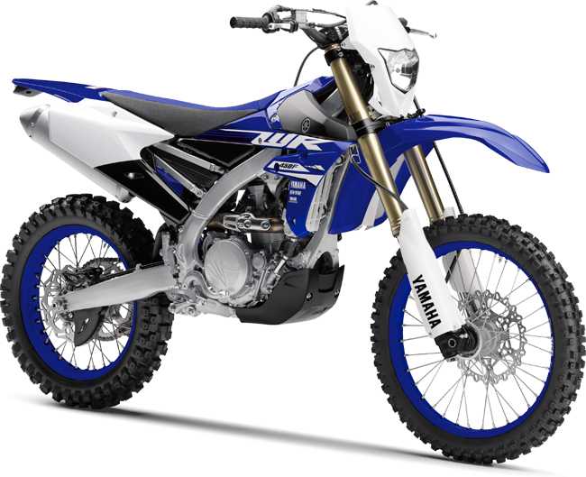

Motociclete petru teren
Enduro
Destinate in principal deplasarilor in teren accidentat. Se impart in doua categorii: cross si hard-enduro. Cele din clasa cross nu sunt dotate cu faruri,semnalizatoare si alte componente electrice, circulatia lor nefiind permisa pe drumurile publice. Desi au aceiasi capacitate cilindrica ca si modelele de hard-enduro puterea lor variaza mult, cele de motocross avand o acceleratie mai rapida dar nu au cuplu ca si o motocicleta de enduro. Atat motocicletele de motocross si hard enduro pot fi recunoscute dupa silueta inalta, garda mare la sol, roata fata mai mare si cauciucurile cu crampoane.
